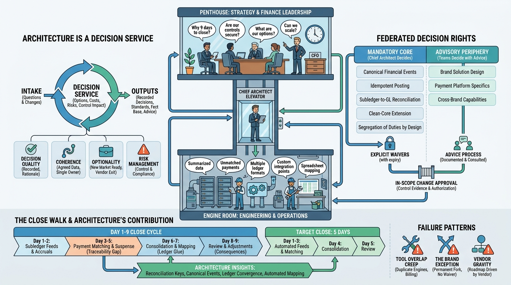

Part I — FOUNDATIONS: The Enterprise and Its Finance Domain
The Chief Architect's Job: Coherence Across a Finance Estate

Image generated by Google Gemini (gemini-3-pro-image-preview)
Part I — FOUNDATIONS: The Enterprise and Its Finance Domain

Image generated by Google Gemini (gemini-3-pro-image-preview)